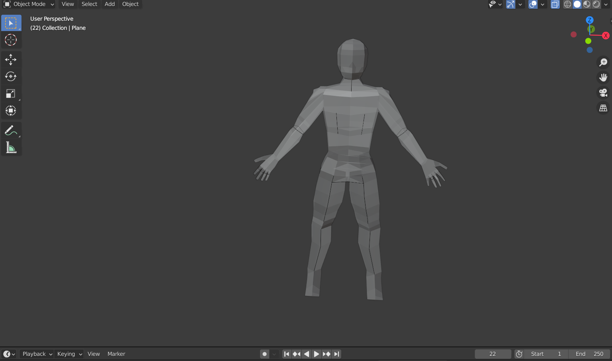

gameplay update 1
gameplay update 2
gameplay update 3
- modélisation perso 1
 modélisation piège 1
modélisation piège 1
Bienvenue, humble voyageur spatial!
Nous sommes une équipe de 4 étudiants en prépa intégrée à l'école d'ingénieur en informatique: l'EPITA. Ceci est le site de notre projet de 2eme semestre, que nous avons décidé d'appeler "Stranded In Space". Si vous voulez plus d'informations concernant ce projet, nous vous invitons à visiter notre site à l'aide du menu déroulant en haut de cette page. Pour télécharger le jeu, en apprendre davantage sur l'univers des personnages et leur histoire, rendez vous dans la section "Le jeu". Pour apprendre à mieux nous connaitre et en savoir plus sur notre vie, allez dans la rubrique "L'histoire du groupe". Si vous voulez tout simplement consulter vos meilleurs scores, allez dans la rubrique "Highscores".
Pour votre plaisir/information/divertissement, voici un petit diaporama de screenshots de l'evolution du jeu au fur et à mesure de sa conception:
gameplay update 1gameplay update 2gameplay update 3modélisation piège 1
Nota Bene:
Ce jeu n'est qu'un jeu d'étudiants en première année, il est donc parfaitement normal que toute évolution après Juillet 2021 soit très peu probable. Merci de votre compréhension, en espérant que vous n'avez pas télécharger notre jeu de maniere illégale ou peu sécurisée.